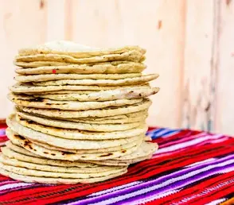
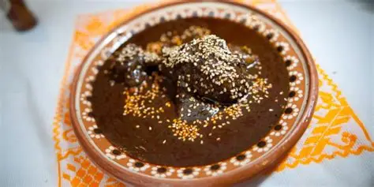
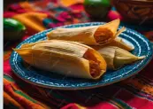

La gastronomía mexicana se caracteriza por la variedad de sabores,
ingredientes tradicionales y recetas que representan la cultura de
cada región del país. Los platos típicos mexicanos combinan colores,
especias y preparaciones ancestrales reconocidas a nivel mundial por
su riqueza culinaria y tradición.
TORTILLAS A MANO

Hechas artesanalmente con maíz, las tortillas a mano son la base de muchos platillos mexicanos y conservan el sabor auténtico de la tradición. Se cocinan sobre un comal, hasta obtener una textura suave y flexible, perfecta para acompañar tacos, enchiladas o cualquier platillo tradicional.
MOLE

Salsa tradicional hecha con chiles, especias y chocolate, que acompaña platillos como pollo o pavo,existen variedades ligeramentedulces o picantes como el molePoblano, o intensos y aromaticos, como el mole negro de Oaxaca. Representa la riqueza de la gastronomía Mexicana.
TACOS

Tortillas rellenas de carnes, verduras o mariscos, acompañadas de salsas que realzan su sabor unico en cada region de Mexico. Siendo uno de los platillos mas emblematicos de Mexico. Son un alimento versátil, rápido y lleno de tradición.
TAMALES

Masa de maíz rellena con carnes, verduras, chiles, salsas o incluso dulces. Envueltas en hoja de maiz o de platano antes de cocerse al vapor. Es un alimento muy arraigado en festividades por su sabor lleno de tradición.
ENCHILADAS

Platillo tradicional mexicano elaborado con tortillas rellenas de pollo, carne, queso o frijoles, bañadas en diferentes tipos de salsa y acompañadas con crema, queso, cebolla y vegetales. Son reconocidas por su gran variedad de sabores y preparaciones en distintas regiones de México.
QUESADILLAS

Tortillas de maíz o harina rellenas principalmente de queso y otros ingredientes como pollo, carne, champiñones o vegetales. Se cocinan hasta obtener una textura suave y un sabor delicioso, convirtiéndose en uno de los alimentos más populares y tradicionales de la gastronomía mexicana.
CHILES RELLENOS

Platillo típico elaborado con chiles grandes rellenos de queso, carne u otros ingredientes tradicionales. Generalmente se preparan acompañados de salsa de tomate y especias mexicanas, destacándose por su combinación de sabores suaves, picantes y muy representativos de la cocina mexicana.
POZOLE

Sopa tradicional preparada con maíz, carne y una mezcla de especias y condimentos que le aportan un sabor característico. Generalmente se acompaña con lechuga, rábano, cebolla y limón, siendo uno de los platillos más representativos de las celebraciones y reuniones familiares mexicanas.